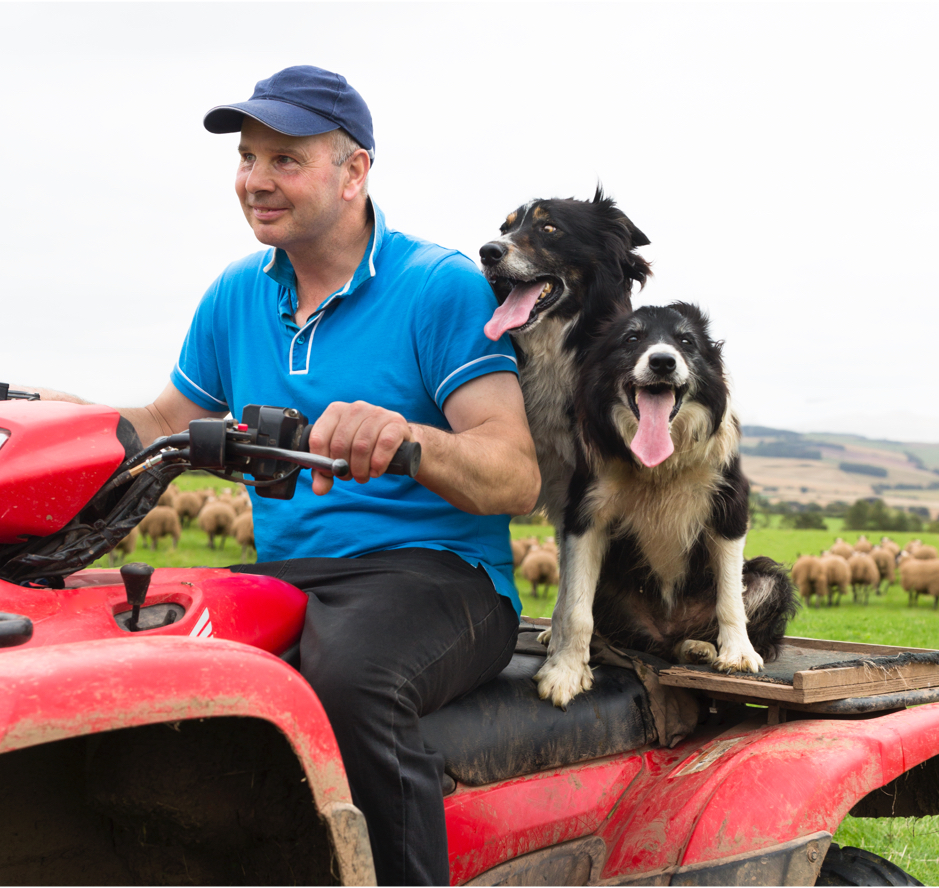

About the Zoetis Foundation
Building on Zoetis inc's ("Zoetis") purpose to nurture our world and humaankind by advancing care for animals, Zoetis has commited an initial $35 million over five years to the Zoetis Foundation to support the Foundation's three grantmaking prioriteis- Education, Well-being and Livelihoods. Across each of the these focus areas, diversity, equity, and inclusion remain a top priority int the typs of partnerships-the Foundation engages with and impacts to enable thriving and inclusive professions for veterinarians and farmers around the globe.
By the Numbers
Zoetis Foundation Grants
$ 35 Million
In 2021, we prodly established the Zoetis Foundation - committing $35 milion over five years - to further our commitmenst to communities and people who care for animals.
Zoetis Corporate Giving
$6m+ invested to support animals and people who care for them
9.6% of all community investments supported CODID-19 relief
$1.83M+ donated to care for animals impacted by disaster
$934,00+ donated to veterinary scholarships
400+ veterinary students supported by our scholarships
$974,000+ invested in veterinary training initiatives
Education
Empowering an inclusive veterinary community starts long before the first day of veterinary school. While enrollment to veterinary schools has been climbing steadily over the past 30 years, racial diversity is still lacking. With 66% of students deciding to pursue the veterinary profession before they reach colleague, reaching diverse youth early is crucial. In addition, veterinary school tuition in the U.S. has risen at a faster pace than other graduate schools. Access to trained veterinarians that can provide high quality veterinary care, for both pet owners and livestock farmers, remains challenged in areas of the world where pet ownership and modern livestock farming are growing. The Zoetis Foundation works with partners who provide scholarships, debt relief, and other initiatives to drive a more inclusive veterinary community and broader access to veterinary training.
Well-being
Working in the veterinary profession can be meaningful and rewarding, full of both opportunities and challenges. However, increased debt, among other factors, leads to mental health challenges, including a higher risk of suicide among veterinarians than many other professions. The Zoetis Foundation’s focus on mental health emphasizes the importance of veterinary well-being.
Livelihoods
Healthy livestock is critical to achieving food security, particularly in regions with exceptionally high incidences of livestock and human disease. In order to ensure rising food and nutrient needs are met, livestock farming productivity must be improved. The Zoetis Foundation funds capacity-building initiatives and business planning programs that help veterinary practices and farmers develop sustainable businesses, protect family legacy, and thrive in an increasingly consolidated industry.
-
We're Driven to Care
Zoetis has a long tradition of caring for and supporting our communities. Our colleagues generously give their time, money and hope to nonprofit organizations in their communities. To further bring to life Zoetis’ priority to build a healthier future, the Zoetis Foundation is proud to support a U.S. Matching Gifts program and to encourage colleagues to volunteer through the U.S. Dollars for Doers program.
 -
Colleague Giving & Volunteering
Zoetis has a long tradition of caring for and supporting our communities. Our colleagues generously give their time, money and hope to nonprofit organizations in their communities. To further bring to life Zoetis’ priority to build a healthier future, the Zoetis Foundation is proud to support a U.S. Matching Gifts program and to encourage colleagues to volunteer through the U.S. Dollars for Doers program.
-
Disaster Relief
Zoetis has a long tradition of caring for and supporting our communities. Our colleagues generously give their time, money and hope to nonprofit organizations in their communities. To further bring to life Zoetis’ priority to build a healthier future, the Zoetis Foundation is proud to support a U.S. Matching Gifts program and to encourage colleagues to volunteer through the U.S. Dollars for Doers program.
-
Community Giving
Zoetis has a long tradition of caring for and supporting our communities. Our colleagues generously give their time, money and hope to nonprofit organizations in their communities. To further bring to life Zoetis’ priority to build a healthier future, the Zoetis Foundation is proud to support a U.S. Matching Gifts program and to encourage colleagues to volunteer through the U.S. Dollars for Doers program.
Leadership
The Foundation is guided by board members and our Philanthropy Working Group - key coleagues have volunteered to share their expertise and inform our local strategies and grantmaking.
The Zoestis Foundation is not accepting solicitations for the funding at this time.